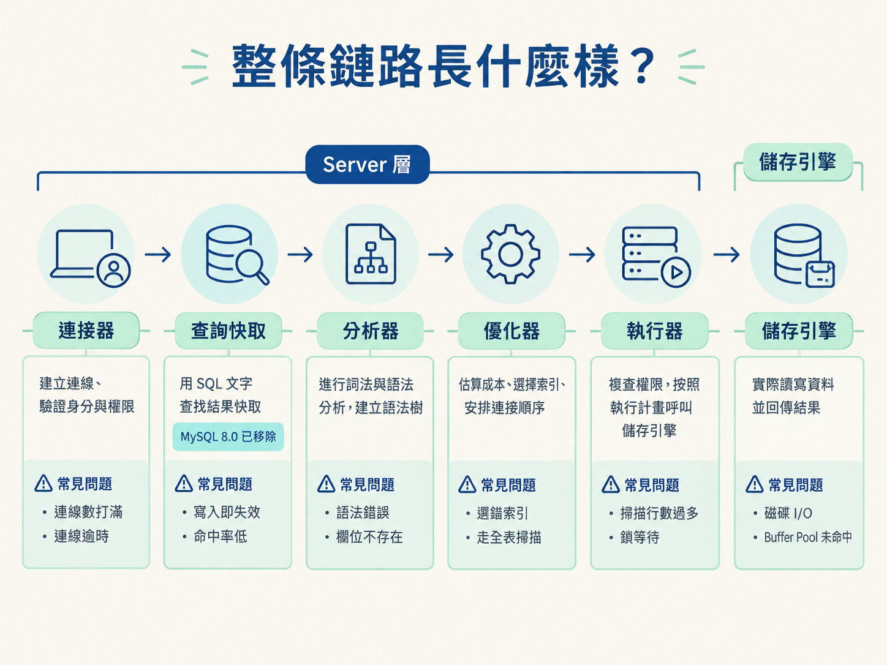
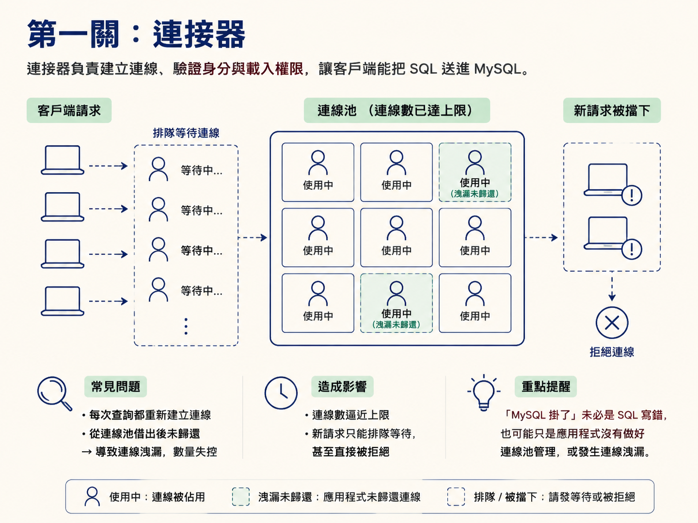
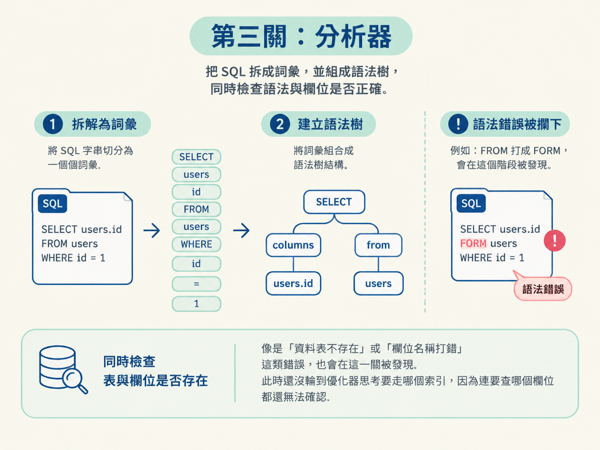
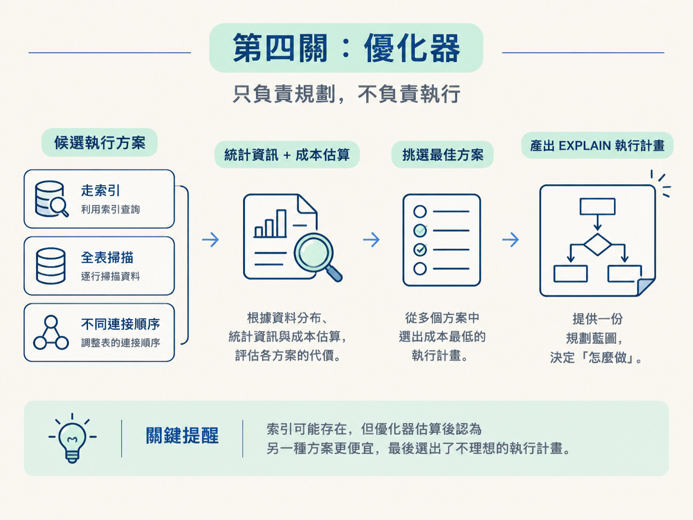
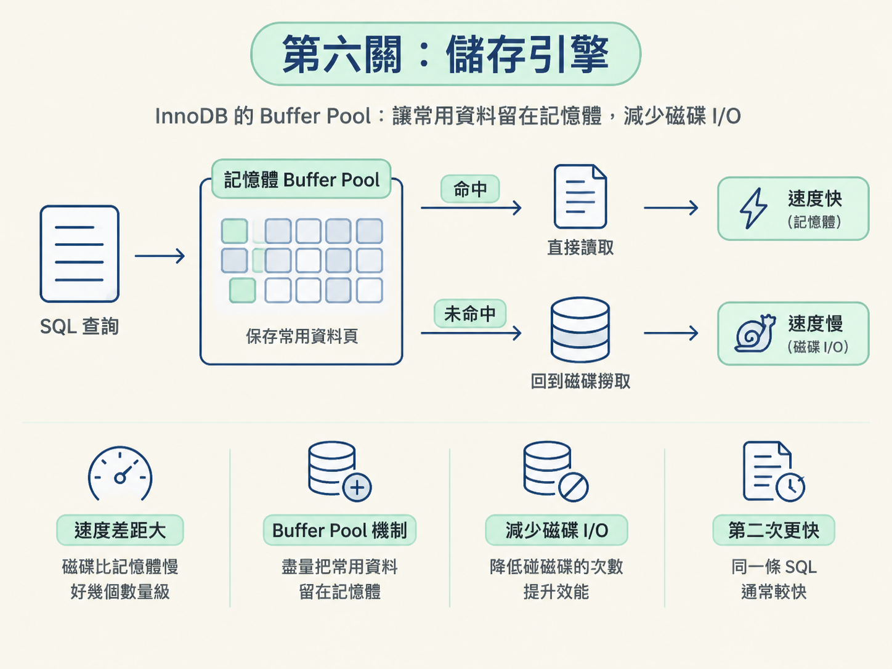

你在應用程式裡送出一條 SELECT * FROM users WHERE id = 42，畫面可能幾毫秒後就拿到資料。表面上看起來只是「送出 SQL、收到結果」，但 MySQL 其實在背後跑完了一條固定的生產線。
這條生產線上的每一站，都有自己的工作，也有自己的故障方式。查詢變慢，原因可能是連線排隊、語法解析、選錯索引、鎖等待，或是磁碟 I/O 變慢。若只盯著 SQL 文字本身，很容易像在黑暗中亂摸；知道它經過哪些關卡，才有辦法把症狀對到正確的位置。
這一課就沿著 SQL 的生命週期，從客戶端一路走到儲存引擎，看看每一關解決什麼問題、沒做好時又會發生什麼事。
一條 SQL 大致會經過六道關卡。前五關屬於 MySQL 的 Server 層，最後才由執行器把實際讀寫資料的工作交給儲存引擎。順序如下：
| 關卡 | 做什麼 | 常見問題 |
|---|---|---|
| 連接器 | 建立連線、驗證身分與權限 | 連線數打滿、連線逾時 |
| 查詢快取 | 用 SQL 文字查找結果快取（MySQL 8.0 已移除） | 寫入即失效、命中率低 |
| 分析器 | 進行詞法與語法分析，建立語法樹 | 語法錯誤、欄位不存在 |
| 優化器 | 估算成本、選擇索引、安排連接順序 | 選錯索引、走全表掃描 |
| 執行器 | 複查權限，按照執行計畫呼叫儲存引擎 | 掃描行數過多、鎖等待 |
| 儲存引擎 | 實際讀寫資料並回傳結果 | 磁碟 I/O、Buffer Pool 未命中 |

客戶端必須先建立連線，才能把 SQL 送進 MySQL。連接器負責建立 TCP 連線、驗證帳號密碼，並確認這個使用者擁有哪些權限。
權限通常會在連線建立時載入並固定下來。之後即使管理員修改了權限，已經存在的連線也不一定會立刻套用新設定，通常要重新建立連線才會生效。
這一關最常見的問題，是連線數量失控。假設應用程式每次查詢都重新建立連線，或是從連線池借出連線後沒有歸還，就像餐廳的桌子被客人坐滿卻一直不離開。當連線數逼近上限，新的請求只能排隊，甚至直接被拒絕。
所以，遇到「MySQL 掛了」時，未必是 SQL 寫錯了，也可能只是應用程式沒有做好連線池管理，或發生了連線洩漏。

在 MySQL 8.0 以前，連線建立後還會先經過查詢快取。它的想法很直接：把完整的 SQL 文字當成 key，把查詢結果當成 value。下一次如果收到完全相同的 SQL，就可以直接回傳結果，不必重新分析與優化。
這聽起來像是把常考的題目先寫在小抄上，下一次直接拿來用。但它的問題也正出在「失效」太粗糙。
只要某張資料表發生任何寫入，和這張表相關的查詢快取就會整批失效。對頻繁更新的資料表來說，快取可能才剛建立，就因為一次寫入被清掉。結果是命中率很低，維護快取反而增加額外成本。
因此，MySQL 8.0 直接移除了查詢快取。這個演進常被拿來考：
查詢快取的速度建立在很粗粒度的失效策略上；當資料表寫入頻繁時，以整句 SQL 為單位、以整張表為範圍失效，往往不划算。
SQL 送進來後，分析器要先確認它「長得像不像一句合法的 SQL」，並弄清楚每個詞扮演什麼角色。這個過程可以分成兩步。
第一步是詞法分析。分析器會把 SELECT * FROM users WHERE id = 42 拆成一個個詞，辨認出 SELECT 是關鍵字、users 是表名、id 是欄位。
第二步是語法分析。它會檢查這些詞的排列方式是否符合 SQL 文法，並建立一棵語法樹。假設你把 FROM 打成 FORM，SQL 在這裡就會被攔下來，根本不會進入後面的優化階段。
分析階段也會確認表與欄位是否存在。因此，「資料表不存在」或「欄位名稱打錯」這類錯誤，也會在這一關被發現。這時候還沒輪到優化器思考要走哪個索引，因為它連要查哪個欄位都還無法確認。

語法正確之後，優化器才開始思考：「這句 SQL 要怎麼執行，成本最低？」
同一條 SQL 往往不只有一種做法。例如，它可能選擇不同的索引；如果涉及多張表，也要決定哪張表先查、哪張表作為驅動表。優化器會根據統計資訊估算各種方案的成本，最後選出它認為最划算的方式，產生執行計畫。
這裡一定要分清楚一件事：
優化器負責決定「怎麼做」，但不負責真的去做。
它產出的執行計畫，就是你使用 EXPLAIN 時看到的內容。優化器依賴的是統計資訊與成本估算，不是把每種方案都實際跑一遍。因此，當統計資訊過期，或資料分布和估算不同時，它可能會做出錯誤判斷。
這就是「明明有索引，查詢卻還是很慢」的常見起點：索引可能存在，但優化器估算後認為另一種方案更便宜，最後選出了不理想的執行計畫。

優化器產生計畫後，執行器才真正開始照著計畫做事。這一關有兩個重點。
第一，執行器會再次確認權限。分析階段主要處理「表和欄位是否存在、SQL 文法是否正確」；到了執行階段，才會確認「這個使用者是否有權限查這張表」。
第二，執行器會按照執行計畫，呼叫儲存引擎提供的介面，逐步取得符合條件的資料。可以把它想成現場指揮：優化器先畫好施工計畫，執行器則拿著這份計畫，實際向儲存引擎一批一批要資料。
慢查詢日誌裡常見的 rows_examined，就是執行器在這一關總共掃描過的行數。如果這個數字遠大於最後回傳的行數，通常代表索引沒有用好，或查詢條件讓索引難以發揮作用。這時候，問題往往要回頭檢查優化器選出的執行計畫。
執行器提出每一個讀取或寫入要求後，最後都會落到儲存引擎。儲存引擎負責真正讀寫資料、維護索引、處理事務與鎖，並把結果交回執行器。
以 InnoDB 為例，它會先確認需要的資料頁是否已經在 Buffer Pool 裡。如果在，就可以直接從記憶體讀取；如果不在，才需要到磁碟上把資料撈回來。這也是為什麼同一條 SQL 第二次執行時，通常會比第一次快：第一次可能把資料載入了 Buffer Pool，第二次就能少碰一次磁碟。
儲存引擎的效能瓶頸，常常和磁碟 I/O 有關。磁碟的速度比記憶體慢好幾個數量級，所以 MySQL 會透過 Buffer Pool 等機制，盡量把常用資料留在記憶體裡，減少碰磁碟的次數。

至於 Buffer Pool 如何運作，以及 InnoDB 為什麼需要這些機制，會在這個節點的最後一步再深入說明。
知道生命週期的價值，不只是能背出六個名詞，而是可以把「慢」定位到比較具體的範圍。
如果請求卡在建立連線，優先檢查連線池、連線數上限與是否有連線洩漏；如果 SQL 一直回報語法錯誤，問題多半在分析器；如果 EXPLAIN 顯示 type=ALL，表示可能正在進行全表掃描，應該回頭檢查優化器與索引選擇。
如果 rows_examined 遠遠大於回傳行數，或請求卡在鎖等待，則要看執行器實際掃描了什麼，以及儲存引擎的鎖狀況。若 Buffer Pool 命中率降低、磁碟讀取突然增加，則應把注意力放到儲存引擎與 I/O。
因此，「SQL 很慢」只是一個症狀，不代表問題一定出在 SQL 文字本身。把症狀放回這條鏈路，你才不會一看到慢查詢就只想重建索引，或一看到連線錯誤就誤以為資料庫已經掛掉。
一條 SQL 的順序是：連接器建立連線並驗證身分，查詢快取比對整句 SQL（MySQL 8.0 已移除），分析器進行詞法與語法分析，優化器估算成本並產生執行計畫，執行器複查權限並按照計畫向儲存引擎要資料，最後由儲存引擎實際讀寫資料並回傳結果。
每一關都有自己的職責，也有自己的故障模式。當你能把症狀對應到關卡，就能更有條理地回答「這條 SQL 為什麼慢」，而不是只停留在「資料庫效能不好」這種模糊結論。
下一步我們暫時離開這條完整鏈路，聚焦在最後一關的兩個主角：InnoDB 與 MyISAM，看看它們在事務、鎖與儲存方式上到底差在哪裡。